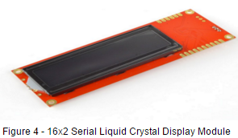

- Authors
- Daniel Hong
-
Saba Shaikh
-
Nnamdi Ibe
-
Ali El-Farou
-
Khalid Awil
-
Ogba Okparanyote
- Date
- 2016-03-12
Introduction
- This document describes the system requirements for Sprint 2. The system design is divided into hardware and software design. Hardware design describes the hardware used in the current product including background information to help understand the design. The software design provides background information, overview information of other software components used in the current product (in particular freeRTOS and its components),and a detailed design of the current product. Software design is modular and uses C software modules.
1.1 Scope
- This software product is identified as Chico: The Robot version 2.0.0. The expected functionalities and deliverables are:
- Setup and test the development environment, document background information about the Stingray robot and various components, the Arduino Mega 2560 card, and the FreeRTOS operating system
- Create a second version of the Product Release Document that presents the product requirements and design of this release (this document)
- Complete the second release of the Chico: The Robot software, which will deliver functionalities listed in section 3 and is based on the software developed in version 1. The overall goal is to develop a vehicle cluster panel such as speedometer, odometer, and temperature meter. The focus is mainly on the motion of the robot and its sensors. The rest of the document covers the overall description of the product and expected functionalities. The next section describes detailed requirements and deliverables for Sprint 2. See the references section for a list of reference documents that describe the details on the hardware and software components.
2 Requirements
2.1 External Interfaces
- Inputs of the realtime system:
- 9 temperature readings (8 pixel sensors, 1 ambient) read from thermal array sensor
- Speed of each wheel in terms of tick count between edge readings from the wheel encoders (photo reflector circuits) Outputs of the real time system:
- Distance, speed and average temperature displayed on the LCD
- LED light colors displaying the direction the system is currently moving in
- Pulse-width signals sent to control the wheel and sensor servomotors
2.2 Software Requirements
- This section provides detailed description of the functional requirements of Sprint 2. The requirements have been broken down into sections for each hardware and software component of the system.
- Scheduler
- The system shall use a cyclic scheduler scheme, implemented through a separate module containing the task calls of all the other modules
- This task will be the only task running in freeRTOS’ default round robin + preemption system using freeRTOS’ task creation method, thus emulating a cyclic scheduler
- xTaskCreate( pvTaskCode, pcName, usStackDepth, pvParameters, uxPriority, pxCreatedTask )
- Task execution ordering is:
- Read temperature,
- Calculate speed
- Move center servo
- Move robot
- Display distance, speed and temperatures on LCD
- Change LCD color
- Movement
- The system shall calculate the speed the robot is moving by utilizing the encoder modules attached to the wheel servo motors and the timer registers associated with the wheels
- The system shall continuously display the speed of the robot in cm/s on the LCD display
- The system shall continuously display the distance travelled in cm by the robot on the LCD display
- The system must maintain forward movement in a straight line at a constant speed
- The system must maintain backward movement in a straight line at a constant speed
- The system must be able to spin to the right at a constant speed.
- The system must be able to spin to the left at a constant speed.
- The system must emit a specific LED light for each pre-defined direction the robot is moving in.
- The system shall emit a green LED light when the robot is moving forward
- The system shall emit a red LED light when the robot is moving backwards
- The system shall emit a blue LED light when the robot is spinning in either direction
- The system shall emit a white LED light when the robot is not moving
- Temperature sensor
- The system shall read the surrounding ambient temperature using the thermal array sensor.
- The system shall read the 8 pixel temperatures using the thermal array sensor
- The system shall emit a red light if the temperature equals or exceeds 40 degrees celsius.
- LCD Screen
- The system shall display temperatures represented by at most two digits
- The system shall use the functions from usartserial.h as the bases of sending commands and writing to the LCD screen
- The system shall open the appropriate USART serial port for output to the LCD
- The appropriate baud rate shall be set (9600)
- USART1_ID shall be the USART serial port to open
- Queue lengths shall be set to constants portSERIAL_BUFFER_TX and portSERIAL_BUFFER_RX respectively
- The system shall display "AMBT: "to indicate the digits that represent the surrounding ambient temperature.
- The system shall display "SP: "to indicate the digits that represent the system’s speed
- The system shall display "DT: "to indicate the digits that represent the distance travelled by the wheels
- The system shall display "L: "to indicate the digits that represent the average temperature of the left thermal pixels
- The system shall display "R: "to indicate the digits that represent the average temperature of the right thermal pixels
- The system shall display the surrounding ambient temperature on 1 line of the LCD screen
- Line 1 will display the average speed of the robot and the distance travelled (odometer function)
- Line 2 will display the ambient temperature, average temperature of the 4 right and left pixels
- The system shall clear the screen before each display update
- The system shall send command codes to the LCD to display on the appropriate lines
- The system shall display the temperature for 10 milliseconds before updating
- WiFi LEDS
- The system shall power on each LED with a current of 0 volts
- The system shall power off each LED with a current of 5 volts
- The system shall power on each LED individually.
- The system shall power off each LED individually
- The system shall allow each LED to be viewed in viewing angles up to 140 degrees from the point of reference
- The system shall set the color of the led to Green, while moving forward.
- The system shall set the color of the led to Red, while moving backwards.
- The system shall set the color of the led to Blue, while spinning (right or left).
- The system shall set the color of the led to White, when not moving.
2.3 Other Requirements
- The release document will complement and extend the existing release document from sprint 1
The system is expected to:
- Move forwards and backwards
- Turn left and turn right
- Stop movement
- Display the correct LED color for the movement state including the stop state
- Realign the center servo to the center when stopped
- Sweep the center servo back and forth while moving
- Display the correct speed, distance and temperatures on the LCD
Source code will be included alongside the document
- Source code will have been compiled and included
3 Overall Description
The Stingray WiFi robot is equipped with various hardware components such as the Arduino Mega 2560 microcontroller, a Serial LCD, Wi-Fi, an Ultrasonic sonar sensor, servo motors, and a photo reflector circuit. This section provides some details of these components to help the user understand the environment.
3.1 Product Perspective
- The Stingray WiFi robot currently mimics the functionality of a temperature monitor. This is achieved by using the existing hardware, including the Arduino Mega 2560 microcontroller, the Sparkfun HD44780U controller based serial 2x16 LCD, the Sandbox Hydrogen WiFi shield with built-in webserver, and the TPA81 Thermopile Array (Thermal Array Sensor) along with the FreeRTOS software modules to manipulate these components. Refer to the references section for more details on each hardware component.
3.2 Hardware Componenets
Stingray Wifi Robot
- The Stingray Wifi Robot (figure 1) specific components include:
- 2 Futuba FP-S148 continuous rotation servo motors for differential steering
- Hamamatsu P5587 photo reflector circuit with wheel incremental encoders
- Parallax PING ultrasonic sensor on a rotating motor
- 8 pixel thermal array sensor
- (DIY Sandbox) Arduino Hydrogen WiFi with built in web server
- Serial 16x2 LCD
- Arduino Mega 2560 Microcontroller
- 2 NiCad 1700 mA/h batteries and AC adaptor
The Arduino Mega2560 (figure 2) is a microcontroller board based on the ATmega2560. The AVR 2560-16AU installed on the Arduino Mega 2560 card is the 100 pin version which provides all parts shown in figure 3. It provides 256 Kbytes of flash memory, 4 Kbytes of EEPROM, 8 Kbytes of RAM, 86 general purpose I/O pins, 12 16-bit resolution PWM channels, serial USARTS, and 16 ADC channels. Refer to the AVR 2560 MicroController/Arduino/StingRay Summary Documentation for more details on the port functions, mapping, and memory map.
The main hardware components used for Sprint 1 include the serial LCD module, 8 pixel thermal array sensor, and the Hydrogen WiFi LEDs.
Stingray Robot Arduino Pinout
This section lists the Arduino Mega pins and its associated hardware of the Stingray robot. See the references section for more details on each part.
Wi-Fi Hydrogen Board
- Communication 6 - TX2
- Communication 5 -RX2
- PWM 10 - Sd Card Cs
- PWM 11 - Sd card MOSI
- PWM 12 - Sd Card MISO
- PWM 13 - Sd Card CLK
- PWM 3 - Blue LED
- PWM 5 - Green LED
- PWM 6 - Red LED
- Reset - Reset
Servos
- PWM 4 - right servo motor
- PWM 2 - left Servo motor
- PWM 7 - center servo motor
Sensors and Display
- Digital I/O 22 - Sonar Input
- Digital I/O 26 - Left Encoder input
- Digital I/O 28 - Right Encoder Input
- Serial TX1 - LCD Display
- SDA 20 - I2C Bus
- SCL 21- I2C Clock Bus
Serial LCD Module

- The 16X2 Liquid Crystal display (LCD), shown in figure 4, is used to display characters. A serLCD v2.5 module is used to interface the LCD. The module takes incoming 9600bps TTL levels and displays the signals on the LCD. Only three wires(5V, GND and Signal) are used to interface the LCD.
- SerLCD Features
- Incoming buffer stores up to 80 characters
- All surface mount design allows a backpack that is half the size of the of the original
- Faster boot up time than previous versions
- User definable splash screen included
- Processing speeds at 8MHZ
- Boot up display can be turned either on or off via firmware
- Adjustable baud rates between 2400,4800,9600,14400,19200 and 38400
- Operational backspace
- Backlight supports pulse width modulation
- The backlight transistor can handle up to 1A
- New PIC 16F688 utilizes onboard UART for greater communication accuracy
Thermal Array Sensor
- The TPA81 (see figure 5) is a thermopile array detecting infra-red in the range of 2um-22um. This is the wavelength of radiant heat. It has an array of eight thermopiles arranged in a row. There are 9 temperature readings available, all in degrees centigrade (°C). Register 1 is the ambient temperature as measured within the sensor. The TPA81 has 10 registers. Register 0 is the command register, registers 2-9 are the 8 pixel temperatures. Temperature acquisition is continuously performed and the readings will be correct within approximately 40ms after the sensor points to a new position.
- Features
- Can detect a candle flame from 6ft
- Unaffected by ambient light
- Simultaneously measures temperature of 8 adjacent points
- Can control a servo to pan the module and build a thermal image
- All communications are done via I2C.
Wi-Fi Hydrogen Shield
The Hydrogen from DIY Sandbox (see figure 7) is a fully integrated WiFi Arduino shield. Hydrogen provides certified 802.11b WiFi connectivity along with an integrated microSD card, true RGB PWM LEDs, integrated 3.3V LDO, dual stackable connectors, and hardware/software UART with SPI chip select.
- Features
- 802.11b certified WiFi Module by GainSpan or integrated antenna
- 11 Mbps WiFi module (throughput limited by Arduino processor clock speed)
- Universal connectivity to adhoc and infrastructure networks
- UF.L connector for external antenna
- Switchable software or hardware UART connection o WEP64/128,WPA/WPA2
- Supports WiFi access point generation
- Supports up to 16 TCP or UDP connections
- Dynamic site scanning of nearby access points including RSSI information or DHCP & DNS lookup
- Micro SD Card Holder
- Three Pulse Width Modulated (PWM) LEDs
- Individual on/off pin and fully customizable power levels
- Red Blue and Green LEDs for brilliant color combinations
Futuba FP-S148 Servomotors
The servomotors are controlled by electrical impulses in a pulse width modulation signal (PWM) applied to them. To keep the servomotor operating, these impulses are repeated continuously by the ATMega2560 microcontroller. The signal is periodic and is encoded in the pulse width (see figure 9).
To control the wheels of the robot, the pulse width applied to the servos determine the angular speed and direction of the wheels.
| PulseWidth | Effect |
| 1.25 | Wheel does not move |
| 0.55 | Maximum speed clockwise |
| 2.33 | Maximum speed counterclockwise |
The central servo is used to position the thermal sensor on top of the robot.
| PulseWidth | Effect |
| 1.25 | Center- in front of the robot |
| 0.55 | Maximum speed clockwise |
| 2.33 | Maximum speed counterclockwise |
Futuba FP-S148 Servomotors
The optical encoders are used to determine the displacement and speed of the robot. Figure 10 shows how an infrared light illuminates the surface of the disk on a turning wheel. The phototransistor outputs logical 1 when the disk is illuminated and 0 when not. Because there are 64 regions (32 dark and 32 reflective) on the disk, there are 32 rising and 32 falling edges and time is measured between two rising edges.
3.3 Product Functions
The objective of the this sprint, was to develop a robot that can: read from the thermal array sensor; perform a set of motions using the servomotors and photo-sensor circuit; calculate and print the speed and distance covered and reflect the direction of motion on he LED.
This was accomplished by implementing a cyclic scheduler to schedule the different functions of the robot. The temperature is gotten from the thermal array sensor, by using the I2C Software Protocol to establish a communication between the microcontroller and the thermal array sensor. The microcontroller (acting as the master device), goes on to read the ambient temperature of the thermal sensor, as well as the surrounding 8 pixel temperatures. The ambient temperature and the average of the 4 left and 4 right pixels are then made available to the other modules.
The wheels of the robot and the head mount are both controlled by the servomotor. The wheels are controlled by setting the pulse width which determines the direction and the angular speed of the wheel; while in the case of the head mount, the pulse width determines its positions.
The speed and distance covered by the robot are both calculated using the number ticks between rising edges. The number of ticks is then converted to time by using the time elapsed between two clock ticks; the distance covered between two rising edges of the encoder is fixed. With the time elapsed and the distance, the speed of the robot is calculated.
The LCD display is used to display the instantaneous speed of the robot, the total distance covered by the robot, the ambient temperature of the thermal sensor, and the average of the four left and right pixels.
The Hydrogen WiFi shield LED is used the indicate the direction of the robot. The color of the LED is green when the robot is moving forwards, red while moving backwards, blue while spinning to the right or left and white when not moving.
3.3 Product Functions
- The precision of the encoder on the stingray robot is limited. The encoder on the stingray is designed to have 64 transitions between the dark and light regions in every complete rotation. The time between the rising and falling edges of the encoder signal from wheel turning at a constant speed should not change; however because the LED illumination is a beam and not a point, light is still reflected on the phototransistor until all of the beam is on the dark side. Therefore time is measured between two rising edges, instead of each transition from rising edge to falling edge, which reduces the precision since only 32 transitions are used in determining the wheel speed and distance travelled.
4 Software Design
4.1 Background Information
To enable movement of the servomotors, the WheelMotion module makes use of the motion module to set the pulse width of the respective servomotors. To enable reading from and writing to the thermal array sensor, the I2CMultiMaster software module was used. This module allows I2C communication via the hardware module provided in the Atmega2560 controller; thereby enabling us to configure the Atmega controller as the master device and the thermal array sensor as the slave device.
To print information to the LCD, the CEG4166_RTS_LIB USART module was used, this module allowed us to open the usart port for output to the LCD; and thereby enabling us to print characters on the LCD screen.
4.2 WheelMotion Software Module
- The Wheel Motion module is responsible for controlling the two servomotors on each wheel of the robot, as well as the servomotor which the head mount of the robot is attached to. This is accomplished by using the motion modules motion_servo_set_pulse_width() to set the pulse width of the motors; the pulse width of the wheel servomotors are then used to determine the direction and the angular speed of the wheels; while setting the pulse width of the head mount servomotor set the position which the head mount should be facing. The wheels of the servo motors are stopped using the motion_servo_stop() function.
This module is also responsible for calculating the speed and distance travelled by the robot. The distance travelled by the robot is gotten from the motion_enc_read() module, which determines if the wheel is currently moving, and then the distance between two rising edges of the encoder signal is added. The number of ticks between two rising edges of the encoder signal is also gotten from the motion_enc_read() function, which is then converted into time by multiplying it to the number of seconds between two ticks; so the speed of the robot is then calculated by dividing the distance by the time used to cover that distance.
4.3 Thermal Sensor Software Module
- This module is responsible for reading information from the thermal array sensor. Communication between the atmega controller and the thermal sensor is done by using the functions provided by the I2CMultiMaster module.
Firstly, the start sequence is sent with the master address, using the I2C_Master_Initialise function. Then the address of the thermal sensor (the slave device), along with the address of the internal address to read from, are then sent using the I2C_Master_Start_Transceiver_With_Data function. Afterwards, the read command is sent to the slave device with the I2C_Master_Start_Transceiver_With_Data funciton, and then the I2C_Master_Get_Data_From_Transceiver function is used to gather the data gotten the thermal sensor.
4.4 SerialLCDModule Software Module
- This module is used to print characters to the screen. Therefore, this module is responsible for printing the ambient temperature, as well as the 8 pixel temperatures read from thermal array sensor.
This module is used to print characters to the screen. Therefore, this module is responsible for printing the ambient temperature, left temperature, right temperature, speed, distance travelled.
The screen is first cleared, then using the usartWrite function, the cursor is positioned to the correct position to print to. Following this, the respective indicator tag and value is printed, moving the cursor each time to allow spacing between each piece of information to be displayed on the LCD. After printing, a delay of 10 milliseconds is used to allow the system enough time to switch tasks as well as finish printing. This value was determined to be effective after various amounts of experimentation with timings.
4.5 LED Software Module
- This module is used to change the color of the LED, depending on the average temperature from the thermal sensor. Firstly, the pins assigned to the LED colors are set to output at 5V. Afterwards, the LED colors are set according to the direction the robot is travelling in using the avr/io modules
4.6 Software System Attributes
- The system exhibits a high level of modularity by ensuring that like elements are grouped together logically and interdependencies between modules are kept at a minimum. We were able to achieve this by ensuring that all modules contained variables and methods that performed specific tasks such as grouping wheel motion functions in the WheelMotion class and LED and LCD related functions in the ledModule and SerialLCDModule classes respectively. All of these modules would interact with a separate Scheduler module that handled the cyclic scheduling of the separate tasks to be performed by the robot.
Shown above is a diagram depicting the interdependencies between the modules present in the system; one can notice that there aren’t any two-way dependencies present, proving that the coupling between the modules is in fact low. This fact, along with the specific nature of each of the system’s modules in terms of function, demonstrate that our system is modular.
5 References
- G. Arbez, “StingRay WiFi Robot Documentation CSI4166/CSI4141,” rep., 2015.
- G. Arbez, “AVR 2560 MicroController/Arduino/StingRay Summary Documentation CEG4166/CSI4141,” rep., 2015.
- S., “Sparkfun Electronics SerLCD v2.5 Serial Enabled LCD,” 2006.
- “TPA81 Infra Red Thermal Sensor,” TPA81 Infra Red Thermal Sensor. [Online]. Available at: http://www.robot-electronics.co.uk/htm/tpa81tech.htm. [Accessed: Feb-2016].


 1.8.11
1.8.11